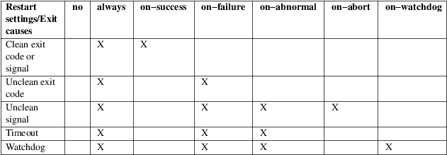

systemd.service − Service unit configuration
service.service
A unit configuration file whose name ends in ".service" encodes information about a process controlled and supervised by systemd.
This man page lists the configuration options specific to this unit type. See systemd.unit(5) for the common options of all unit configuration files. The common configuration items are configured in the generic [Unit] and [Install] sections. The service specific configuration options are configured in the [Service] section.
Additional options are listed in systemd.exec(5), which define the execution environment the commands are executed in, and in systemd.kill(5), which define the way the processes of the service are terminated, and in systemd.resource-control(5), which configure resource control settings for the processes of the service.
If SysV init compat is enabled, systemd automatically creates service units that wrap SysV init scripts (the service name is the same as the name of the script, with a ".service" suffix added); see systemd-sysv-generator(8).
The systemd-run(1) command allows creating .service and .scope units dynamically and transiently from the command line.
It is possible for systemd services to take a single argument via the "service@argument.service" syntax. Such services are called "instantiated" services, while the unit definition without the argument parameter is called a "template". An example could be a dhcpcd@.service service template which takes a network interface as a parameter to form an instantiated service. Within the service file, this parameter or "instance name" can be accessed with %−specifiers. See systemd.unit(5) for details.
Implicit
Dependencies
The following dependencies are implicitly added:
• Services with Type=dbus set automatically acquire dependencies of type Requires= and After= on dbus.socket.
• Socket activated services are automatically ordered after their activating .socket units via an automatic After= dependency. Services also pull in all .socket units listed in Sockets= via automatic Wants= and After= dependencies.
Additional implicit dependencies may be added as result of execution and resource control parameters as documented in systemd.exec(5) and systemd.resource-control(5).
Default
Dependencies
The following dependencies are added unless
DefaultDependencies=no is set:
• Service units will have dependencies of type Requires= and After= on sysinit.target, a dependency of type After= on basic.target as well as dependencies of type Conflicts= and Before= on shutdown.target. These ensure that normal service units pull in basic system initialization, and are terminated cleanly prior to system shutdown. Only services involved with early boot or late system shutdown should disable this option.
• Instanced service units (i.e. service units with an "@" in their name) are assigned by default a per−template slice unit (see systemd.slice(5)), named after the template unit, containing all instances of the specific template. This slice is normally stopped at shutdown, together with all template instances. If that is not desired, set DefaultDependencies=no in the template unit, and either define your own per−template slice unit file that also sets DefaultDependencies=no, or set Slice=system.slice (or another suitable slice) in the template unit. Also see systemd.resource-control(5).
Service unit files may include [Unit] and [Install] sections, which are described in systemd.unit(5).
Service unit files must include a [Service] section, which carries information about the service and the process it supervises. A number of options that may be used in this section are shared with other unit types. These options are documented in systemd.exec(5), systemd.kill(5) and systemd.resource-control(5). The options specific to the [Service] section of service units are the following:
Type=
Configures the process start−up type for this service unit. One of simple, exec, forking, oneshot, dbus, notify, notify−reload or idle:
• If set to simple (the default if ExecStart= is specified but neither Type= nor BusName= are), the service manager will consider the unit started immediately after the main service process has been forked off. It is expected that the process configured with ExecStart= is the main process of the service. In this mode, if the process offers functionality to other processes on the system, its communication channels should be installed before the service is started up (e.g. sockets set up by systemd, via socket activation), as the service manager will immediately proceed starting follow−up units, right after creating the main service process, and before executing the service's binary. Note that this means systemctl start command lines for simple services will report success even if the service's binary cannot be invoked successfully (for example because the selected User= doesn't exist, or the service binary is missing).
• The exec type is similar to simple, but the service manager will consider the unit started immediately after the main service binary has been executed. The service manager will delay starting of follow−up units until that point. (Or in other words: simple proceeds with further jobs right after fork() returns, while exec will not proceed before both fork() and execve() in the service process succeeded.) Note that this means systemctl start command lines for exec services will report failure when the service's binary cannot be invoked successfully (for example because the selected User= doesn't exist, or the service binary is missing).
• If set to forking, it is expected that the process configured with ExecStart= will call fork() as part of its start−up. The parent process is expected to exit when start−up is complete and all communication channels are set up. The child continues to run as the main service process, and the service manager will consider the unit started when the parent process exits. This is the behavior of traditional UNIX services. If this setting is used, it is recommended to also use the PIDFile= option, so that systemd can reliably identify the main process of the service. systemd will proceed with starting follow−up units as soon as the parent process exits.
• Behavior of oneshot is similar to simple; however, the service manager will consider the unit up after the main process exits. It will then start follow−up units. RemainAfterExit= is particularly useful for this type of service. Type=oneshot is the implied default if neither Type= nor ExecStart= are specified. Note that if this option is used without RemainAfterExit= the service will never enter "active" unit state, but directly transition from "activating" to "deactivating" or "dead" since no process is configured that shall run continuously. In particular this means that after a service of this type ran (and which has RemainAfterExit= not set) it will not show up as started afterwards, but as dead.
• Behavior of dbus is similar to simple; however, it is expected that the service acquires a name on the D−Bus bus, as configured by BusName=. systemd will proceed with starting follow−up units after the D−Bus bus name has been acquired. Service units with this option configured implicitly gain dependencies on the dbus.socket unit. This type is the default if BusName= is specified. A service unit of this type is considered to be in the activating state until the specified bus name is acquired. It is considered activated while the bus name is taken. Once the bus name is released the service is considered being no longer functional which has the effect that the service manager attempts to terminate any remaining processes belonging to the service. Services that drop their bus name as part of their shutdown logic thus should be prepared to receive a SIGTERM (or whichever signal is configured in KillSignal=) as result.
• Behavior of notify is similar to exec; however, it is expected that the service sends a "READY=1" notification message via sd_notify(3) or an equivalent call when it has finished starting up. systemd will proceed with starting follow−up units after this notification message has been sent. If this option is used, NotifyAccess= (see below) should be set to open access to the notification socket provided by systemd. If NotifyAccess= is missing or set to none, it will be forcibly set to main.
• Behavior of notify−reload is identical to notify. However, it extends the logic in one way: the SIGHUP UNIX process signal is sent to the service's main process when the service is asked to reload. (The signal to send can be tweaked via ReloadSignal=, see below.). When initiating the reload process the service is then expected to reply with a notification message via sd_notify(3) that contains the "RELOADING=1" field in combination with "MONOTONIC_USEC=" set to the current monotonic time (i.e. CLOCK_MONOTONIC in clock_gettime(2)) in µs, formatted as decimal string. Once reloading is complete another notification message must be sent, containing "READY=1". Using this service type and implementing this reload protocol is an efficient alternative to providing an ExecReload= command for reloading of the service's configuration.
• Behavior of idle is very similar to simple; however, actual execution of the service program is delayed until all active jobs are dispatched. This may be used to avoid interleaving of output of shell services with the status output on the console. Note that this type is useful only to improve console output, it is not useful as a general unit ordering tool, and the effect of this service type is subject to a 5s timeout, after which the service program is invoked anyway.
It is generally recommended to use Type=simple for long−running services whenever possible, as it is the simplest and fastest option. However, as this service type won't propagate service start−up failures and doesn't allow ordering of other units against completion of initialization of the service (which for example is useful if clients need to connect to the service through some form of IPC, and the IPC channel is only established by the service itself — in contrast to doing this ahead of time through socket or bus activation or similar), it might not be sufficient for many cases. If so, notify, notify−reload or dbus (the latter only in case the service provides a D−Bus interface) are the preferred options as they allow service program code to precisely schedule when to consider the service started up successfully and when to proceed with follow−up units. The notify/notify−reload service types require explicit support in the service codebase (as sd_notify() or an equivalent API needs to be invoked by the service at the appropriate time) — if it's not supported, then forking is an alternative: it supports the traditional UNIX service start−up protocol. Finally, exec might be an option for cases where it is enough to ensure the service binary is invoked, and where the service binary itself executes no or little initialization on its own (and its initialization is unlikely to fail). Note that using any type other than simple possibly delays the boot process, as the service manager needs to wait for service initialization to complete. It is hence recommended not to needlessly use any types other than simple. (Also note it is generally not recommended to use idle or oneshot for long−running services.)
ExitType=
Specifies when the manager should consider the service to be finished. One of main or cgroup:
• If set to main (the default), the service manager will consider the unit stopped when the main process, which is determined according to the Type=, exits. Consequently, it cannot be used with Type=oneshot.
• If set to cgroup, the service will be considered running as long as at least one process in the cgroup has not exited.
It is generally recommended to use ExitType=main when a service has a known forking model and a main process can reliably be determined. ExitType= cgroup is meant for applications whose forking model is not known ahead of time and which might not have a specific main process. It is well suited for transient or automatically generated services, such as graphical applications inside of a desktop environment.
RemainAfterExit=
Takes a boolean value that specifies whether the service shall be considered active even when all its processes exited. Defaults to no.
GuessMainPID=
Takes a boolean value that specifies whether systemd should try to guess the main PID of a service if it cannot be determined reliably. This option is ignored unless Type=forking is set and PIDFile= is unset because for the other types or with an explicitly configured PID file, the main PID is always known. The guessing algorithm might come to incorrect conclusions if a daemon consists of more than one process. If the main PID cannot be determined, failure detection and automatic restarting of a service will not work reliably. Defaults to yes.
PIDFile=
Takes a path referring to the PID file of the service. Usage of this option is recommended for services where Type= is set to forking. The path specified typically points to a file below /run/. If a relative path is specified it is hence prefixed with /run/. The service manager will read the PID of the main process of the service from this file after start−up of the service. The service manager will not write to the file configured here, although it will remove the file after the service has shut down if it still exists. The PID file does not need to be owned by a privileged user, but if it is owned by an unprivileged user additional safety restrictions are enforced: the file may not be a symlink to a file owned by a different user (neither directly nor indirectly), and the PID file must refer to a process already belonging to the service.
Note that PID files should be avoided in modern projects. Use Type=notify, Type=notify−reload or Type=simple where possible, which does not require use of PID files to determine the main process of a service and avoids needless forking.
BusName=
Takes a D−Bus destination name that this service shall use. This option is mandatory for services where Type= is set to dbus. It is recommended to always set this property if known to make it easy to map the service name to the D−Bus destination. In particular, systemctl service−log−level/service−log−target verbs make use of this.
ExecStart=
Commands with their arguments that are executed when this service is started. The value is split into zero or more command lines according to the rules described below (see section "Command Lines" below).
Unless Type= is oneshot, exactly one command must be given. When Type=oneshot is used, zero or more commands may be specified. Commands may be specified by providing multiple command lines in the same directive, or alternatively, this directive may be specified more than once with the same effect. If the empty string is assigned to this option, the list of commands to start is reset, prior assignments of this option will have no effect. If no ExecStart= is specified, then the service must have RemainAfterExit=yes and at least one ExecStop= line set. (Services lacking both ExecStart= and ExecStop= are not valid.)
For each of the specified commands, the first argument must be either an absolute path to an executable or a simple file name without any slashes. Optionally, this filename may be prefixed with a number of special characters:
Table 1. Special
executable prefixes
"@", "−", ":", and one
of "+"/"!"/"!!" may be used
together and they can appear in any order. However, only one
of "+", "!", "!!" may be used
at a time. Note that these prefixes are also supported for
the other command line settings, i.e. ExecStartPre=,
ExecStartPost=, ExecReload=, ExecStop=
and ExecStopPost=.
If more than one command is specified, the commands are invoked sequentially in the order they appear in the unit file. If one of the commands fails (and is not prefixed with "−"), other lines are not executed, and the unit is considered failed.
Unless Type=forking is set, the process started via this command line will be considered the main process of the daemon.
ExecStartPre=, ExecStartPost=
Additional commands that are executed before or after the command in ExecStart=, respectively. Syntax is the same as for ExecStart=, except that multiple command lines are allowed and the commands are executed one after the other, serially.
If any of those commands (not prefixed with "−") fail, the rest are not executed and the unit is considered failed.
ExecStart= commands are only run after all ExecStartPre= commands that were not prefixed with a "−" exit successfully.
ExecStartPost= commands are only run after the commands specified in ExecStart= have been invoked successfully, as determined by Type= (i.e. the process has been started for Type=simple or Type=idle, the last ExecStart= process exited successfully for Type=oneshot, the initial process exited successfully for Type=forking, "READY=1" is sent for Type=notify/Type=notify−reload, or the BusName= has been taken for Type=dbus).
Note that ExecStartPre= may not be used to start long−running processes. All processes forked off by processes invoked via ExecStartPre= will be killed before the next service process is run.
Note that if any of the commands specified in ExecStartPre=, ExecStart=, or ExecStartPost= fail (and are not prefixed with "−", see above) or time out before the service is fully up, execution continues with commands specified in ExecStopPost=, the commands in ExecStop= are skipped.
Note that the execution of ExecStartPost= is taken into account for the purpose of Before=/After= ordering constraints.
ExecCondition=
Optional commands that are executed before the commands in ExecStartPre=. Syntax is the same as for ExecStart=, except that multiple command lines are allowed and the commands are executed one after the other, serially.
The behavior is like an ExecStartPre= and condition check hybrid: when an ExecCondition= command exits with exit code 1 through 254 (inclusive), the remaining commands are skipped and the unit is not marked as failed. However, if an ExecCondition= command exits with 255 or abnormally (e.g. timeout, killed by a signal, etc.), the unit will be considered failed (and remaining commands will be skipped). Exit code of 0 or those matching SuccessExitStatus= will continue execution to the next commands.
The same recommendations about not running long−running processes in ExecStartPre= also applies to ExecCondition=. ExecCondition= will also run the commands in ExecStopPost=, as part of stopping the service, in the case of any non−zero or abnormal exits, like the ones described above.
ExecReload=
Commands to execute to trigger a configuration reload in the service. This argument takes multiple command lines, following the same scheme as described for ExecStart= above. Use of this setting is optional. Specifier and environment variable substitution is supported here following the same scheme as for ExecStart=.
One additional, special environment variable is set: if known, $MAINPID is set to the main process of the daemon, and may be used for command lines like the following:
ExecReload=kill −HUP $MAINPID
Note however that reloading a daemon by enqueuing a signal (as with the example line above) is usually not a good choice, because this is an asynchronous operation and hence not suitable when ordering reloads of multiple services against each other. It is thus strongly recommended to either use Type=notify−reload in place of ExecReload=, or to set ExecReload= to a command that not only triggers a configuration reload of the daemon, but also synchronously waits for it to complete. For example, dbus-broker(1) uses the following:
ExecReload=busctl
call org.freedesktop.DBus \
/org/freedesktop/DBus org.freedesktop.DBus \
ReloadConfig
ExecStop=
Commands to execute to stop the service started via ExecStart=. This argument takes multiple command lines, following the same scheme as described for ExecStart= above. Use of this setting is optional. After the commands configured in this option are run, it is implied that the service is stopped, and any processes remaining for it are terminated according to the KillMode= setting (see systemd.kill(5)). If this option is not specified, the process is terminated by sending the signal specified in KillSignal= or RestartKillSignal= when service stop is requested. Specifier and environment variable substitution is supported (including $MAINPID, see above).
Note that it is usually not sufficient to specify a command for this setting that only asks the service to terminate (for example, by sending some form of termination signal to it), but does not wait for it to do so. Since the remaining processes of the services are killed according to KillMode= and KillSignal= or RestartKillSignal= as described above immediately after the command exited, this may not result in a clean stop. The specified command should hence be a synchronous operation, not an asynchronous one.
Note that the commands specified in ExecStop= are only executed when the service started successfully first. They are not invoked if the service was never started at all, or in case its start−up failed, for example because any of the commands specified in ExecStart=, ExecStartPre= or ExecStartPost= failed (and weren't prefixed with "−", see above) or timed out. Use ExecStopPost= to invoke commands when a service failed to start up correctly and is shut down again. Also note that the stop operation is always performed if the service started successfully, even if the processes in the service terminated on their own or were killed. The stop commands must be prepared to deal with that case. $MAINPID will be unset if systemd knows that the main process exited by the time the stop commands are called.
Service restart requests are implemented as stop operations followed by start operations. This means that ExecStop= and ExecStopPost= are executed during a service restart operation.
It is recommended to use this setting for commands that communicate with the service requesting clean termination. For post−mortem clean−up steps use ExecStopPost= instead.
ExecStopPost=
Additional commands that are executed after the service is stopped. This includes cases where the commands configured in ExecStop= were used, where the service does not have any ExecStop= defined, or where the service exited unexpectedly. This argument takes multiple command lines, following the same scheme as described for ExecStart=. Use of these settings is optional. Specifier and environment variable substitution is supported. Note that – unlike ExecStop= – commands specified with this setting are invoked when a service failed to start up correctly and is shut down again.
It is recommended to use this setting for clean−up operations that shall be executed even when the service failed to start up correctly. Commands configured with this setting need to be able to operate even if the service failed starting up half−way and left incompletely initialized data around. As the service's processes have been terminated already when the commands specified with this setting are executed they should not attempt to communicate with them.
Note that all commands that are configured with this setting are invoked with the result code of the service, as well as the main process' exit code and status, set in the $SERVICE_RESULT, $EXIT_CODE and $EXIT_STATUS environment variables, see systemd.exec(5) for details.
Note that the execution of ExecStopPost= is taken into account for the purpose of Before=/After= ordering constraints.
RestartSec=
Configures the time to sleep before restarting a service (as configured with Restart=). Takes a unit−less value in seconds, or a time span value such as "5min 20s". Defaults to 100ms.
TimeoutStartSec=
Configures the time to wait for start−up. If a daemon service does not signal start−up completion within the configured time, the service will be considered failed and will be shut down again. The precise action depends on the TimeoutStartFailureMode= option. Takes a unit−less value in seconds, or a time span value such as "5min 20s". Pass "infinity" to disable the timeout logic. Defaults to DefaultTimeoutStartSec= set in the manager, except when Type=oneshot is used, in which case the timeout is disabled by default (see systemd-system.conf(5)).
If a service of Type=notify/Type=notify−reload sends "EXTEND_TIMEOUT_USEC=...", this may cause the start time to be extended beyond TimeoutStartSec=. The first receipt of this message must occur before TimeoutStartSec= is exceeded, and once the start time has extended beyond TimeoutStartSec=, the service manager will allow the service to continue to start, provided the service repeats "EXTEND_TIMEOUT_USEC=..." within the interval specified until the service startup status is finished by "READY=1". (see sd_notify(3)).
TimeoutStopSec=
This option serves two purposes. First, it configures the time to wait for each ExecStop= command. If any of them times out, subsequent ExecStop= commands are skipped and the service will be terminated by SIGTERM. If no ExecStop= commands are specified, the service gets the SIGTERM immediately. This default behavior can be changed by the TimeoutStopFailureMode= option. Second, it configures the time to wait for the service itself to stop. If it doesn't terminate in the specified time, it will be forcibly terminated by SIGKILL (see KillMode= in systemd.kill(5)). Takes a unit−less value in seconds, or a time span value such as "5min 20s". Pass "infinity" to disable the timeout logic. Defaults to DefaultTimeoutStopSec= from the manager configuration file (see systemd-system.conf(5)).
If a service of Type=notify/Type=notify−reload sends "EXTEND_TIMEOUT_USEC=...", this may cause the stop time to be extended beyond TimeoutStopSec=. The first receipt of this message must occur before TimeoutStopSec= is exceeded, and once the stop time has extended beyond TimeoutStopSec=, the service manager will allow the service to continue to stop, provided the service repeats "EXTEND_TIMEOUT_USEC=..." within the interval specified, or terminates itself (see sd_notify(3)).
TimeoutAbortSec=
This option configures the time to wait for the service to terminate when it was aborted due to a watchdog timeout (see WatchdogSec=). If the service has a short TimeoutStopSec= this option can be used to give the system more time to write a core dump of the service. Upon expiration the service will be forcibly terminated by SIGKILL (see KillMode= in systemd.kill(5)). The core file will be truncated in this case. Use TimeoutAbortSec= to set a sensible timeout for the core dumping per service that is large enough to write all expected data while also being short enough to handle the service failure in due time.
Takes a unit−less value in seconds, or a time span value such as "5min 20s". Pass an empty value to skip the dedicated watchdog abort timeout handling and fall back TimeoutStopSec=. Pass "infinity" to disable the timeout logic. Defaults to DefaultTimeoutAbortSec= from the manager configuration file (see systemd-system.conf(5)).
If a service of Type=notify/Type=notify−reload handles SIGABRT itself (instead of relying on the kernel to write a core dump) it can send "EXTEND_TIMEOUT_USEC=..." to extended the abort time beyond TimeoutAbortSec=. The first receipt of this message must occur before TimeoutAbortSec= is exceeded, and once the abort time has extended beyond TimeoutAbortSec=, the service manager will allow the service to continue to abort, provided the service repeats "EXTEND_TIMEOUT_USEC=..." within the interval specified, or terminates itself (see sd_notify(3)).
TimeoutSec=
A shorthand for configuring both TimeoutStartSec= and TimeoutStopSec= to the specified value.
TimeoutStartFailureMode=, TimeoutStopFailureMode=
These options configure the action that is taken in case a daemon service does not signal start−up within its configured TimeoutStartSec=, respectively if it does not stop within TimeoutStopSec=. Takes one of terminate, abort and kill. Both options default to terminate.
If terminate is set the service will be gracefully terminated by sending the signal specified in KillSignal= (defaults to SIGTERM, see systemd.kill(5)). If the service does not terminate the FinalKillSignal= is sent after TimeoutStopSec=. If abort is set, WatchdogSignal= is sent instead and TimeoutAbortSec= applies before sending FinalKillSignal=. This setting may be used to analyze services that fail to start−up or shut−down intermittently. By using kill the service is immediately terminated by sending FinalKillSignal= without any further timeout. This setting can be used to expedite the shutdown of failing services.
RuntimeMaxSec=
Configures a maximum time for the service to run. If this is used and the service has been active for longer than the specified time it is terminated and put into a failure state. Note that this setting does not have any effect on Type=oneshot services, as they terminate immediately after activation completed. Pass "infinity" (the default) to configure no runtime limit.
If a service of Type=notify/Type=notify−reload sends "EXTEND_TIMEOUT_USEC=...", this may cause the runtime to be extended beyond RuntimeMaxSec=. The first receipt of this message must occur before RuntimeMaxSec= is exceeded, and once the runtime has extended beyond RuntimeMaxSec=, the service manager will allow the service to continue to run, provided the service repeats "EXTEND_TIMEOUT_USEC=..." within the interval specified until the service shutdown is achieved by "STOPPING=1" (or termination). (see sd_notify(3)).
RuntimeRandomizedExtraSec=
This option modifies RuntimeMaxSec= by increasing the maximum runtime by an evenly distributed duration between 0 and the specified value (in seconds). If RuntimeMaxSec= is unspecified, then this feature will be disabled.
WatchdogSec=
Configures the watchdog timeout for a service. The watchdog is activated when the start−up is completed. The service must call sd_notify(3) regularly with "WATCHDOG=1" (i.e. the "keep−alive ping"). If the time between two such calls is larger than the configured time, then the service is placed in a failed state and it will be terminated with SIGABRT (or the signal specified by WatchdogSignal=). By setting Restart= to on−failure, on−watchdog, on−abnormal or always, the service will be automatically restarted. The time configured here will be passed to the executed service process in the WATCHDOG_USEC= environment variable. This allows daemons to automatically enable the keep−alive pinging logic if watchdog support is enabled for the service. If this option is used, NotifyAccess= (see below) should be set to open access to the notification socket provided by systemd. If NotifyAccess= is not set, it will be implicitly set to main. Defaults to 0, which disables this feature. The service can check whether the service manager expects watchdog keep−alive notifications. See sd_watchdog_enabled(3) for details. sd_event_set_watchdog(3) may be used to enable automatic watchdog notification support.
Restart=
Configures whether the service shall be restarted when the service process exits, is killed, or a timeout is reached. The service process may be the main service process, but it may also be one of the processes specified with ExecStartPre=, ExecStartPost=, ExecStop=, ExecStopPost=, or ExecReload=. When the death of the process is a result of systemd operation (e.g. service stop or restart), the service will not be restarted. Timeouts include missing the watchdog "keep−alive ping" deadline and a service start, reload, and stop operation timeouts.
Takes one of no, on−success, on−failure, on−abnormal, on−watchdog, on−abort, or always. If set to no (the default), the service will not be restarted. If set to on−success, it will be restarted only when the service process exits cleanly. In this context, a clean exit means any of the following:
• exit code of 0;
• for types other than Type=oneshot, one of the signals SIGHUP, SIGINT, SIGTERM, or SIGPIPE;
• exit statuses and signals specified in SuccessExitStatus=.
If set to on−failure, the service will be restarted when the process exits with a non−zero exit code, is terminated by a signal (including on core dump, but excluding the aforementioned four signals), when an operation (such as service reload) times out, and when the configured watchdog timeout is triggered. If set to on−abnormal, the service will be restarted when the process is terminated by a signal (including on core dump, excluding the aforementioned four signals), when an operation times out, or when the watchdog timeout is triggered. If set to on−abort, the service will be restarted only if the service process exits due to an uncaught signal not specified as a clean exit status. If set to on−watchdog, the service will be restarted only if the watchdog timeout for the service expires. If set to always, the service will be restarted regardless of whether it exited cleanly or not, got terminated abnormally by a signal, or hit a timeout.
Table 2. Exit
causes and the effect of the Restart= settings

As exceptions to the setting above, the service will not be restarted if the exit code or signal is specified in RestartPreventExitStatus= (see below) or the service is stopped with systemctl stop or an equivalent operation. Also, the services will always be restarted if the exit code or signal is specified in RestartForceExitStatus= (see below).
Note that service restart is subject to unit start rate limiting configured with StartLimitIntervalSec= and StartLimitBurst=, see systemd.unit(5) for details. A restarted service enters the failed state only after the start limits are reached.
Setting this to on−failure is the recommended choice for long−running services, in order to increase reliability by attempting automatic recovery from errors. For services that shall be able to terminate on their own choice (and avoid immediate restarting), on−abnormal is an alternative choice.
SuccessExitStatus=
Takes a list of exit status definitions that, when returned by the main service process, will be considered successful termination, in addition to the normal successful exit status 0 and, except for Type=oneshot, the signals SIGHUP, SIGINT, SIGTERM, and SIGPIPE. Exit status definitions can be numeric termination statuses, termination status names, or termination signal names, separated by spaces. See the Process Exit Codes section in systemd.exec(5) for a list of termination status names (for this setting only the part without the "EXIT_" or "EX_" prefix should be used). See signal(7) for a list of signal names.
Note that this setting does not change the mapping between numeric exit statuses and their names, i.e. regardless how this setting is used 0 will still be mapped to "SUCCESS" (and thus typically shown as "0/SUCCESS" in tool outputs) and 1 to "FAILURE" (and thus typically shown as "1/FAILURE"), and so on. It only controls what happens as effect of these exit statuses, and how it propagates to the state of the service as a whole.
This option may appear more than once, in which case the list of successful exit statuses is merged. If the empty string is assigned to this option, the list is reset, all prior assignments of this option will have no effect.
Example 1. A service with the SuccessExitStatus= setting
SuccessExitStatus=TEMPFAIL 250 SIGKILL
Exit status 75 (TEMPFAIL), 250, and the termination signal SIGKILL are considered clean service terminations.
Note: systemd−analyze exit−status may be used to list exit statuses and translate between numerical status values and names.
RestartPreventExitStatus=
Takes a list of exit status definitions that, when returned by the main service process, will prevent automatic service restarts, regardless of the restart setting configured with Restart=. Exit status definitions can either be numeric exit codes or termination signal names, and are separated by spaces. Defaults to the empty list, so that, by default, no exit status is excluded from the configured restart logic. For example:
RestartPreventExitStatus=1 6 SIGABRT
ensures that exit codes 1 and 6 and the termination signal SIGABRT will not result in automatic service restarting. This option may appear more than once, in which case the list of restart−preventing statuses is merged. If the empty string is assigned to this option, the list is reset and all prior assignments of this option will have no effect.
Note that this setting has no effect on processes configured via ExecStartPre=, ExecStartPost=, ExecStop=, ExecStopPost= or ExecReload=, but only on the main service process, i.e. either the one invoked by ExecStart= or (depending on Type=, PIDFile=, ...) the otherwise configured main process.
RestartForceExitStatus=
Takes a list of exit status definitions that, when returned by the main service process, will force automatic service restarts, regardless of the restart setting configured with Restart=. The argument format is similar to RestartPreventExitStatus=.
RootDirectoryStartOnly=
Takes a boolean argument. If true, the root directory, as configured with the RootDirectory= option (see systemd.exec(5) for more information), is only applied to the process started with ExecStart=, and not to the various other ExecStartPre=, ExecStartPost=, ExecReload=, ExecStop=, and ExecStopPost= commands. If false, the setting is applied to all configured commands the same way. Defaults to false.
NonBlocking=
Set the O_NONBLOCK flag for all file descriptors passed via socket−based activation. If true, all file descriptors >= 3 (i.e. all except stdin, stdout, stderr), excluding those passed in via the file descriptor storage logic (see FileDescriptorStoreMax= for details), will have the O_NONBLOCK flag set and hence are in non−blocking mode. This option is only useful in conjunction with a socket unit, as described in systemd.socket(5) and has no effect on file descriptors which were previously saved in the file−descriptor store for example. Defaults to false.
NotifyAccess=
Controls access to the service status notification socket, as accessible via the sd_notify(3) call. Takes one of none (the default), main, exec or all. If none, no daemon status updates are accepted from the service processes, all status update messages are ignored. If main, only service updates sent from the main process of the service are accepted. If exec, only service updates sent from any of the main or control processes originating from one of the Exec*= commands are accepted. If all, all services updates from all members of the service's control group are accepted. This option should be set to open access to the notification socket when using Type=notify/Type=notify−reload or WatchdogSec= (see above). If those options are used but NotifyAccess= is not configured, it will be implicitly set to main.
Note that sd_notify() notifications may be attributed to units correctly only if either the sending process is still around at the time PID 1 processes the message, or if the sending process is explicitly runtime−tracked by the service manager. The latter is the case if the service manager originally forked off the process, i.e. on all processes that match main or exec. Conversely, if an auxiliary process of the unit sends an sd_notify() message and immediately exits, the service manager might not be able to properly attribute the message to the unit, and thus will ignore it, even if NotifyAccess=all is set for it.
Hence, to eliminate all race conditions involving lookup of the client's unit and attribution of notifications to units correctly, sd_notify_barrier() may be used. This call acts as a synchronization point and ensures all notifications sent before this call have been picked up by the service manager when it returns successfully. Use of sd_notify_barrier() is needed for clients which are not invoked by the service manager, otherwise this synchronization mechanism is unnecessary for attribution of notifications to the unit.
Sockets=
Specifies the name of the socket units this service shall inherit socket file descriptors from when the service is started. Normally, it should not be necessary to use this setting, as all socket file descriptors whose unit shares the same name as the service (subject to the different unit name suffix of course) are passed to the spawned process.
Note that the same socket file descriptors may be passed to multiple processes simultaneously. Also note that a different service may be activated on incoming socket traffic than the one which is ultimately configured to inherit the socket file descriptors. Or, in other words: the Service= setting of .socket units does not have to match the inverse of the Sockets= setting of the .service it refers to.
This option may appear more than once, in which case the list of socket units is merged. Note that once set, clearing the list of sockets again (for example, by assigning the empty string to this option) is not supported.
FileDescriptorStoreMax=
Configure how many file descriptors may be stored in the service manager for the service using sd_pid_notify_with_fds(3)'s "FDSTORE=1" messages. This is useful for implementing services that can restart after an explicit request or a crash without losing state. Any open sockets and other file descriptors which should not be closed during the restart may be stored this way. Application state can either be serialized to a file in /run/, or better, stored in a memfd_create(2) memory file descriptor. Defaults to 0, i.e. no file descriptors may be stored in the service manager. All file descriptors passed to the service manager from a specific service are passed back to the service's main process on the next service restart (see sd_listen_fds(3) for details about the precise protocol used and the order in which the file descriptors are passed). Any file descriptors passed to the service manager are automatically closed when POLLHUP or POLLERR is seen on them, or when the service is fully stopped and no job is queued or being executed for it. If this option is used, NotifyAccess= (see above) should be set to open access to the notification socket provided by systemd. If NotifyAccess= is not set, it will be implicitly set to main.
USBFunctionDescriptors=
Configure the location of a file containing USB FunctionFS [1] descriptors, for implementation of USB gadget functions. This is used only in conjunction with a socket unit with ListenUSBFunction= configured. The contents of this file are written to the ep0 file after it is opened.
USBFunctionStrings=
Configure the location of a file containing USB FunctionFS strings. Behavior is similar to USBFunctionDescriptors= above.
OOMPolicy=
Configure the out−of−memory (OOM) killing policy for the kernel and the userspace OOM killer systemd-oomd.service(8). On Linux, when memory becomes scarce to the point that the kernel has trouble allocating memory for itself, it might decide to kill a running process in order to free up memory and reduce memory pressure. Note that systemd−oomd.service is a more flexible solution that aims to prevent out−of−memory situations for the userspace too, not just the kernel, by attempting to terminate services earlier, before the kernel would have to act.
This setting takes one of continue, stop or kill. If set to continue and a process in the unit is killed by the OOM killer, this is logged but the unit continues running. If set to stop the event is logged but the unit is terminated cleanly by the service manager. If set to kill and one of the unit's processes is killed by the OOM killer the kernel is instructed to kill all remaining processes of the unit too, by setting the memory.oom.group attribute to 1; also see kernel documentation [2] .
Defaults to the setting DefaultOOMPolicy= in systemd-system.conf(5) is set to, except for units where Delegate= is turned on, where it defaults to continue.
Use the OOMScoreAdjust= setting to configure whether processes of the unit shall be considered preferred or less preferred candidates for process termination by the Linux OOM killer logic. See systemd.exec(5) for details.
This setting also applies to systemd−oomd. Similarly to the kernel OOM kills, this setting determines the state of the unit after systemd−oomd kills a cgroup associated with it.
OpenFile=
Takes an argument of the form "path[:fd−name:options]", where:
• "path" is a path to a file or an AF_UNIX socket in the file system;
• "fd−name" is a name that will be associated with the file descriptor; the name may contain any ASCII character, but must exclude control characters and ":", and must be at most 255 characters in length; it is optional and, if not provided, defaults to the file name;
• "options" is a comma−separated list of access options; possible values are "read−only", "append", "truncate", "graceful"; if not specified, files will be opened in rw mode; if "graceful" is specified, errors during file/socket opening are ignored. Specifying the same option several times is treated as an error.
The file or socket is opened by the service manager and the file descriptor is passed to the service. If the path is a socket, we call connect() on it. See sd_listen_fds(3) for more details on how to retrieve these file descriptors.
This setting is useful to allow services to access files/sockets that they can't access themselves (due to running in a separate mount namespace, not having privileges, ...).
This setting can be specified multiple times, in which case all the specified paths are opened and the file descriptors passed to the service. If the empty string is assigned, the entire list of open files defined prior to this is reset.
ReloadSignal=
Configures the UNIX process signal to send to the service's main process when asked to reload the service's configuration. Defaults to SIGHUP. This option has no effect unless Type=notify−reload is used, see above.
Check systemd.unit(5), systemd.exec(5), and systemd.kill(5) for more settings.
This section describes command line parsing and variable and specifier substitutions for ExecStart=, ExecStartPre=, ExecStartPost=, ExecReload=, ExecStop=, and ExecStopPost= options.
Multiple command lines may be concatenated in a single directive by separating them with semicolons (these semicolons must be passed as separate words). Lone semicolons may be escaped as "\;".
Each command line is unquoted using the rules described in "Quoting" section in systemd.syntax(7). The first item becomes the command to execute, and the subsequent items the arguments.
This syntax is inspired by shell syntax, but only the meta−characters and expansions described in the following paragraphs are understood, and the expansion of variables is different. Specifically, redirection using "<", "<<", ">", and ">>", pipes using "|", running programs in the background using "&", and other elements of shell syntax are not supported.
The command to execute may contain spaces, but control characters are not allowed.
The command line accepts "%" specifiers as described in systemd.unit(5).
Basic environment variable substitution is supported. Use "${FOO}" as part of a word, or as a word of its own, on the command line, in which case it will be erased and replaced by the exact value of the environment variable (if any) including all whitespace it contains, always resulting in exactly a single argument. Use "$FOO" as a separate word on the command line, in which case it will be replaced by the value of the environment variable split at whitespace, resulting in zero or more arguments. For this type of expansion, quotes are respected when splitting into words, and afterwards removed.
If the command is not a full (absolute) path, it will be resolved to a full path using a fixed search path determined at compilation time. Searched directories include /usr/local/bin/, /usr/bin/, /bin/ on systems using split /usr/bin/ and /bin/ directories, and their sbin/ counterparts on systems using split bin/ and sbin/. It is thus safe to use just the executable name in case of executables located in any of the "standard" directories, and an absolute path must be used in other cases. Using an absolute path is recommended to avoid ambiguity. Hint: this search path may be queried using systemd−path search−binaries−default.
Example:
Environment="ONE=one"
'TWO=two two'
ExecStart=echo $ONE $TWO ${TWO}
This will execute /bin/echo with four arguments: "one", "two", "two", and "two two".
Example:
Environment=ONE='one'
"TWO='two two' too" THREE=
ExecStart=/bin/echo ${ONE} ${TWO} ${THREE}
ExecStart=/bin/echo $ONE $TWO $THREE
This results in /bin/echo being called twice, the first time with arguments "'one'", "'two two' too", "", and the second time with arguments "one", "two two", "too".
To pass a literal dollar sign, use "$$". Variables whose value is not known at expansion time are treated as empty strings. Note that the first argument (i.e. the program to execute) may not be a variable.
Variables to be used in this fashion may be defined through Environment= and EnvironmentFile=. In addition, variables listed in the section "Environment variables in spawned processes" in systemd.exec(5), which are considered "static configuration", may be used (this includes e.g. $USER, but not $TERM).
Note that shell command lines are not directly supported. If shell command lines are to be used, they need to be passed explicitly to a shell implementation of some kind. Example:
ExecStart=sh −c 'dmesg | tac'
Example:
ExecStart=echo one ; echo "two two"
This will execute echo two times, each time with one argument: "one" and "two two", respectively. Because two commands are specified, Type=oneshot must be used.
Example:
ExecStart=echo
/ >/dev/null & \; \
ls
This will execute echo with five arguments: "/", ">/dev/null", "&", ";", and "ls".
Example 2. Simple service
The following unit file creates a service that will execute /usr/sbin/foo−daemon. Since no Type= is specified, the default Type=simple will be assumed. systemd will assume the unit to be started immediately after the program has begun executing.
[Unit]
Description=Foo
[Service]
ExecStart=/usr/sbin/foo−daemon
[Install]
WantedBy=multi−user.target
Note that systemd assumes here that the process started by systemd will continue running until the service terminates. If the program daemonizes itself (i.e. forks), please use Type=forking instead.
Since no ExecStop= was specified, systemd will send SIGTERM to all processes started from this service, and after a timeout also SIGKILL. This behavior can be modified, see systemd.kill(5) for details.
Note that this unit type does not include any type of notification when a service has completed initialization. For this, you should use other unit types, such as Type=notify/Type=notify−reload if the service understands systemd's notification protocol, Type=forking if the service can background itself or Type=dbus if the unit acquires a DBus name once initialization is complete. See below.
Example 3. Oneshot service
Sometimes, units should just execute an action without keeping active processes, such as a filesystem check or a cleanup action on boot. For this, Type=oneshot exists. Units of this type will wait until the process specified terminates and then fall back to being inactive. The following unit will perform a cleanup action:
[Unit]
Description=Cleanup old Foo data
[Service]
Type=oneshot
ExecStart=/usr/sbin/foo−cleanup
[Install]
WantedBy=multi−user.target
Note that systemd will consider the unit to be in the state "starting" until the program has terminated, so ordered dependencies will wait for the program to finish before starting themselves. The unit will revert to the "inactive" state after the execution is done, never reaching the "active" state. That means another request to start the unit will perform the action again.
Type=oneshot are the only service units that may have more than one ExecStart= specified. For units with multiple commands (Type=oneshot), all commands will be run again.
For Type=oneshot, Restart=always and Restart=on−success are not allowed.
Example 4. Stoppable oneshot service
Similarly to the oneshot services, there are sometimes units that need to execute a program to set up something and then execute another to shut it down, but no process remains active while they are considered "started". Network configuration can sometimes fall into this category. Another use case is if a oneshot service shall not be executed each time when they are pulled in as a dependency, but only the first time.
For this, systemd knows the setting RemainAfterExit=yes, which causes systemd to consider the unit to be active if the start action exited successfully. This directive can be used with all types, but is most useful with Type=oneshot and Type=simple. With Type=oneshot, systemd waits until the start action has completed before it considers the unit to be active, so dependencies start only after the start action has succeeded. With Type=simple, dependencies will start immediately after the start action has been dispatched. The following unit provides an example for a simple static firewall.
[Unit]
Description=Simple firewall
[Service]
Type=oneshot
RemainAfterExit=yes
ExecStart=/usr/local/sbin/simple−firewall−start
ExecStop=/usr/local/sbin/simple−firewall−stop
[Install]
WantedBy=multi−user.target
Since the unit is considered to be running after the start action has exited, invoking systemctl start on that unit again will cause no action to be taken.
Example 5. Traditional forking services
Many traditional daemons/services background (i.e. fork, daemonize) themselves when starting. Set Type=forking in the service's unit file to support this mode of operation. systemd will consider the service to be in the process of initialization while the original program is still running. Once it exits successfully and at least a process remains (and RemainAfterExit=no), the service is considered started.
Often, a traditional daemon only consists of one process. Therefore, if only one process is left after the original process terminates, systemd will consider that process the main process of the service. In that case, the $MAINPID variable will be available in ExecReload=, ExecStop=, etc.
In case more than one process remains, systemd will be unable to determine the main process, so it will not assume there is one. In that case, $MAINPID will not expand to anything. However, if the process decides to write a traditional PID file, systemd will be able to read the main PID from there. Please set PIDFile= accordingly. Note that the daemon should write that file before finishing with its initialization. Otherwise, systemd might try to read the file before it exists.
The following example shows a simple daemon that forks and just starts one process in the background:
[Unit]
Description=Some simple daemon
[Service]
Type=forking
ExecStart=/usr/sbin/my−simple−daemon
−d
[Install]
WantedBy=multi−user.target
Please see systemd.kill(5) for details on how you can influence the way systemd terminates the service.
Example 6. DBus services
For services that acquire a name on the DBus system bus, use Type=dbus and set BusName= accordingly. The service should not fork (daemonize). systemd will consider the service to be initialized once the name has been acquired on the system bus. The following example shows a typical DBus service:
[Unit]
Description=Simple DBus service
[Service]
Type=dbus
BusName=org.example.simple−dbus−service
ExecStart=/usr/sbin/simple−dbus−service
[Install]
WantedBy=multi−user.target
For bus−activatable services, do not include a [Install] section in the systemd service file, but use the SystemdService= option in the corresponding DBus service file, for example (/usr/share/dbus−1/system−services/org.example.simple−dbus−service.service):
[D−BUS
Service]
Name=org.example.simple−dbus−service
Exec=/usr/sbin/simple−dbus−service
User=root
SystemdService=simple−dbus−service.service
Please see systemd.kill(5) for details on how you can influence the way systemd terminates the service.
Example 7. Services that notify systemd about their initialization
Type=simple services are really easy to write, but have the major disadvantage of systemd not being able to tell when initialization of the given service is complete. For this reason, systemd supports a simple notification protocol that allows daemons to make systemd aware that they are done initializing. Use Type=notify or Type=notify−reload for this. A typical service file for such a daemon would look like this:
[Unit]
Description=Simple notifying service
[Service]
Type=notify
ExecStart=/usr/sbin/simple−notifying−service
[Install]
WantedBy=multi−user.target
Note that the daemon has to support systemd's notification protocol, else systemd will think the service has not started yet and kill it after a timeout. For an example of how to update daemons to support this protocol transparently, take a look at sd_notify(3). systemd will consider the unit to be in the 'starting' state until a readiness notification has arrived.
Please see systemd.kill(5) for details on how you can influence the way systemd terminates the service.
systemd(1), systemctl(1), systemd-system.conf(5), systemd.unit(5), systemd.exec(5), systemd.resource-control(5), systemd.kill(5), systemd.directives(7), systemd-run(1)
|
1. |
USB FunctionFS |
https://docs.kernel.org/usb/functionfs.html
|
2. |
kernel documentation |
https://docs.kernel.org/admin-guide/cgroup-v2.html